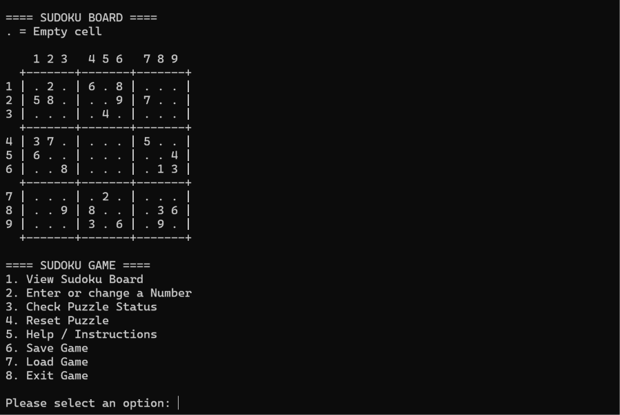

Languages
C++, HTML, CSS
Student Developer Portfolio
I am an aspiring software developer learning C++ and exploring the world of programming. I enjoy solving problems, building applications, and learning new ways to improve my skills. My goal is to continue growing as a developer and create useful programs.

About Me
I am a student developer learning how to design and build programs using C++. My interest in programming has grown as I have worked on projects that challenge me to think logically and solve problems. Through my coursework, I have gained experience with object-oriented programming, debugging, Git, and GitHub. One of my current projects is a Sudoku Game with Checker Assistant, which has helped me develop my skills in program structure, classes, and problem-solving. I look forward to continuing to learn new technologies and improving as a developer.
My career goal is to continue developing my programming skills and work toward becoming a software developer.
C++, HTML, CSS
Visual Studio, Git, GitHub
Object-oriented programming, debugging, and clean code
Featured Work

C++ Console Application
The Sudoku Game with Checker Assistant is a C++ console application that allows users to play Sudoku while receiving help checking their moves. The program displays a Sudoku puzzle, allows players to enter numbers, check for conflicts, and provide options to save and load their progress. The project uses object-oriented programming to organize the game into separate classes.
C++, Visual Studio Community, Git, and GitHub.
One challenge I faced was organizing the Sudoku game into separate classes and making sure each class worked together correctly. I addressed this by separating responsibilities between the board, checker, and puzzle classes and testing each feature as I developed it.
One of my biggest challenges was learning how to organize a C++ program using multiple classes and separate header and source files. I also worked on understanding pointers, references, and memory management. Through testing, debugging, and improving my code, I learned how important program structure and problem-solving are when developing an application. This project has helped me become more confident in C++ programming.